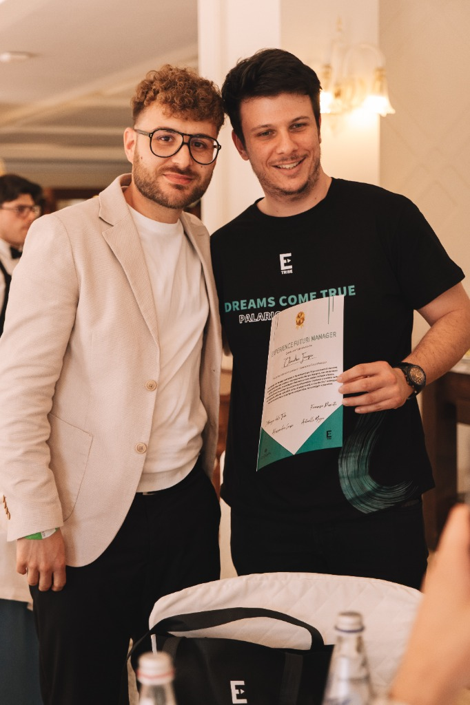
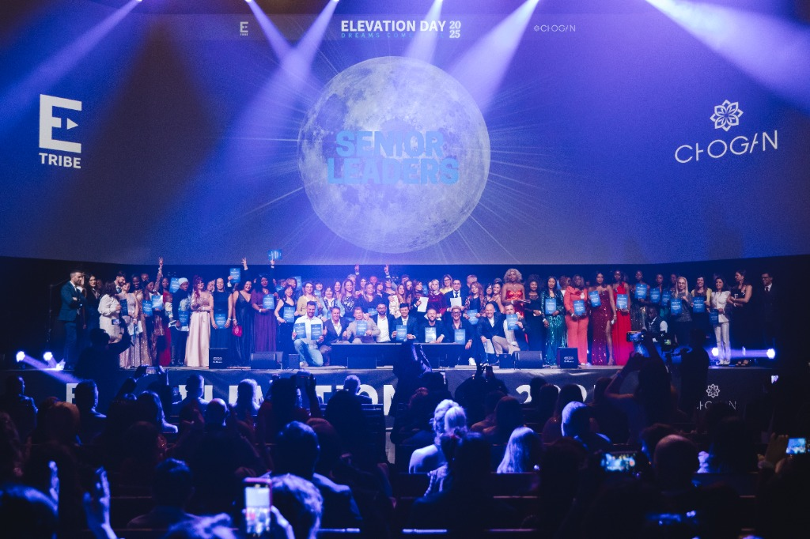

Formazione 100% Gratuita
Esattamente come è stato fatto con me fin dal primo giorno, avrai accesso completamente gratuito a percorsi formativi, video-lezioni, zoom operative e strategie digitali aggiornate per imparare il mestiere da zero.
Mi chiamo Claudio Fauzia. Sono un operaio nel settore chimico-farmaceutico, un ragazzo solare e ambizioso che ha sempre sentito di dover realizzare qualcosa di grande. Oggi, come Senior Leader di Elevation Tribe, guido passo dopo passo chi desidera costruirsi un'entrata extra nel mondo digitale.
Scrivimi in DM su @ilclaudianofz — rispondo personalmente ad ogni messaggio, senza alcun impegno.
Ho sempre pensato che un giorno avrei dovuto realizzare qualcosa di grande. Non aspettavo la fortuna: cercavo solo il veicolo giusto e qualcuno disposto a mostrarmi la strada.
Nessuna favola irraggiungibile: solo il percorso reale di un ragazzo normale che ha deciso di non accontentarsi.
Mi chiamo Claudio Fauzia e nella vita di tutti i giorni sono un operaio nel settore chimico-farmaceutico. È un lavoro serio, fatto di orari precisi, responsabilità e impegno costante, che mi ha insegnato il valore della disciplina e del sacrificio.
Chi mi conosce sa bene come sono fatto: sono un ragazzo solare, positivo e profondamente ambizioso. Eppure, anno dopo anno passato in fabbrica, sentivo dentro di me una voce che non si spegneva mai. Avevo la certezza interiore che un giorno avrei dovuto realizzare qualcosa di grande, qualcosa che andasse oltre il limitarsi ad arrivare a fine mese aspettando il weekend.
Dopo diversi anni in fabbrica è arrivato il momento che ha cambiato la mia prospettiva. Marco Busolini, un mio grande amico, mi ha parlato di un'attività online e della possibilità di costruire qualcosa di mio nel settore digitale.
Voglio essere sincero fino in fondo: all'inizio ero molto scettico. Guardavo il mondo dell'online con diffidenza, avevo paura di non essere portato o che non facesse per me. Ma ahimè, guardandomi intorno al giorno d'oggi — con il caro vita e tutte le spese quotidiane da affrontare — ho capito che restare fermo per paura non avrebbe cambiato nulla nel mio futuro.
Così ho fatto un respiro profondo, mi sono fidato di un amico e mi sono lanciato. Mai scelta fu migliore.

Il mio percorso è iniziato all'interno della mia community, Elevation Tribe. Partivo senza alcuna esperienza nel business digitale, ma grazie alla formazione completamente gratuita che mi è stata messa a disposizione — la stessa formazione gratuita che oggi offriamo a ogni nuovo membro — ho imparato passo dopo passo come svolgere in modo etico, serio e strutturato la professione del Networker.
Collaborando con un'azienda partner solida e riconosciuta, ho trasformato la mia ambizione in competenze reali. Oggi il mio scopo è chiaro: aiutare altre persone a crescere nel business digitale e a costruirsi un'entrata extra concreta, evitando loro gli errori di chi prova a fare tutto da solo.
Quel ragazzo scettico che lavorava in fabbrica si è ritrovato sotto i riflettori dell'Elevation Day, premiato davanti a migliaia di persone.
Salire su quel palco in abito elegante, con il cuore a mille e l'energia della sala intorno a me, mi ha dimostrato che quando unisci formazione, costanza e la guida giusta, nessun obiettivo è precluso.

Elevation Day · Senior LeadersEssere premiato tra i Senior Leaders di Elevation Tribe non è un punto d'arrivo, ma la prova concreta che il nostro sistema educativo funziona per chiunque abbia voglia di imparare e mettersi in gioco.
Significa che non ti affiderai a qualcuno che parla per teoria. Conosco sulla mia pelle cosa vuol dire iniziare da zero, incastrare l'attività con i turni di lavoro, superare i primi timori e costruire risultati veri. La strada che ho percorso io è esattamente quella su cui accompagnerò te.
Entrando nella nostra community non sarai mai un numero né verrai mai lasciato da solo. Riceverai tutto ciò che ti serve per partire con sicurezza nel business online.
Esattamente come è stato fatto con me fin dal primo giorno, avrai accesso completamente gratuito a percorsi formativi, video-lezioni, zoom operative e strategie digitali aggiornate per imparare il mestiere da zero.
Un dubbio la sera dopo il lavoro? Una domanda prima di fare un passo importante? Avrai il mio affiancamento diretto e una rete di supporto attiva H24 pronta a sostenerti in ogni singolo momento.
Nessun salto nel vuoto e nessun tecnicismo incomprensibile. Spezzettiamo ogni obiettivo in azioni semplici, chiare e replicabili, adattate al tempo che hai realmente a disposizione ogni settimana.
Collaboriamo con un'azienda strutturata per permetterti di affiancare al tuo stipendio o ai tuoi studi una seconda entrata meritocratica, capace di crescere insieme alle tue competenze.
Mi scrivi in DM su @ilclaudianofz: ascolto la tua situazione attuale, i tuoi obiettivi e rispondo in totale trasparenza ad ogni tua curiosità.
Accedi gratuitamente all'ecosistema formativo della nostra community e conosci gli strumenti digitali e l'azienda con cui collaboriamo.
Impostiamo insieme i tuoi primi passi pratici rispettando i tuoi orari di lavoro o di famiglia, con il mio supporto H24 al tuo fianco.
Costruisci i tuoi primi guadagni online, acquisisci sicurezza e cresci passo dopo passo verso le qualifiche della community.
Nel business digitale si lavora spesso dallo smartphone, ma in Elevation Tribe il cuore pulsante sono le persone vere.
Organizziamo costantemente eventi dal vivo, sale di formazione e incontri nazionali dove si respira un'energia positiva unica. Spesso, nella vita quotidiana, chi prova a fare qualcosa di nuovo viene scoraggiato; nei nostri eventi accade l'esatto opposto.
«Da soli si va veloci, ma insieme a una community che crede in te si arriva dove non avresti mai immaginato.»
Essere scettici è segno di intelligenza. Ecco le risposte sincere alle domande che mi vengono fatte più spesso prima di iniziare.
Se senti che lo stipendio tradizionale ti sta stretto, se vuoi alleggerire il peso delle spese mensili o se semplicemente sai di meritare qualcosa di più grande, non lasciare che i dubbi decidano al posto tuo. Scrivimi oggi stesso: avrai formazione gratuita, un gruppo pieno di energia positiva e il mio supporto H24 passo dopo passo.
Scegli la frase in cui ti rivedi di più: preparerò il messaggio per te, lo copierò negli appunti e aprirò direttamente il mio profilo Instagram.